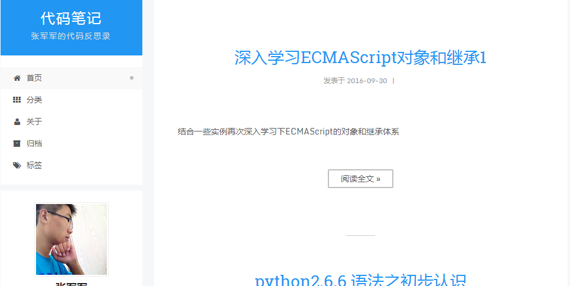

-
- Basic info. 基本信息
- 个人信息: 张军军 / 男 / 23岁
- 教育经历: 本科 / 运城学院机电工程系 / 2017年应届生
- 英语水平: CET-6
- 常用ID:
- Blog: www.googlewo.com
- GitHub: www.github.com/ZHJUNJUN
-
- Experience. 项目 .
个人项目1（2015.7 - 2015.11）
-
仿淘宝购物网站-手机端APP
仿淘宝购物平台的后端管理开发,根据需求独立实现了后台的RBAC权限模块(没有采用Spring的Security框架),资费管理模块,账务和帐号管理模块,业务帐号管理和报表模块
混合移动端app开发,实现了一个基本的单页应用,包括首页,详情页,购物车页,登录页等页面
使用 Spring 和 MyBatis框架 来实现后端业务，使用基于Cordova打包的WeX5实现Hybrid App
个人项目2
-
微信公众号开发（2015.11） 源代码 Demo
超级智能的 一个微信公众号 ，智能对话 人脸识别 语音识别 智能推送歌曲 随时地理定位 ( 基于百度地图API ) 移动地理位置天气查询
-
壹心理咨询网站（2015.11） 源代码 Demo
基本实现了网页的 模块查询 推荐查询 分页查询 详细信息页面的查询 题目查询 以及 网站留言 和 数据的爬取 ,数据库的SQL优化
采用 struts2 + hibernate 注解方式 实现网站后台业务 , FreeMarker 模版引擎, Log4j 的日志管理 ,基于 jUint4 的单元测试 和 BootStrap前端UI构建页面,百度Echarts可视化心理测试结果 ,Ueditor留言
-
一个三级分销系统后台（2015.11） 源代码 Demo
主要实现用户的登录和MD5密码加密,Filter实现RBAC ,后台数据字典的维护, 区域代理会员的注册 ,系统记账 ,分销提货申请 ,会计结算等模块
使用JQueryUI 构建网站后台模版 采用SpringMVC + Spring + Mybaits的后台架构
-
googlewo个人博客（2015.2 - 至今） 源代码 Demo
hexo主题修改，内容维护
 -
Udactiy Android(初,中,高)课程（2016.4 - 2016.6） 源代码
学习Udactiy Android(初,中,高)课程，并独立完成其中的项目
-
个人简历（2015.8 - 至今） 源代码 Demo
设计优雅、内容完善的静态简历页面，可以用浏览器直接生成合适尺寸的PDF，使用 Gulp 改进工作流

-
一系列的Python小程序 源代码
一系列Python小程序，包括 图像处理 数据库 文件操作 正则式 等内容
-
Simple-C Compiler 源代码
一个用C编写的简单类C语言编译器，目前完成了 词法分析 语法分析 阶段，使用了 Lex Yacc 两个工具 没有维护
-
WHUTNews 源代码
Python 编写的爬取教务处公告，判断是否有新通知，并把新通知发邮件提醒的简单 Python 爬虫程序
-
- Skill. 技能清单
后端
-
环境
熟悉 Linux 开发环境、 Linux 服务器环境搭建部署，一年 Linux 日常使用经验
了解 Apache Nginx web服务器
Java
有扎实的JavaSE EE基础,能够熟练的使用Servlet jsp SpringMVC SpringBoot JDBC等web组件,实现过一个基于WebService的多人聊天室
擅长Struts2 + Hibernate 4 + Spring(SSH) 架构开发,能够独立完成需求模块
可以熟练使用Spring+SpringMV+Mybatis整合开发,可以独立完成druid,C3P0,DBCP连接池的配置
熟练使用Oracle和MySQL开发,在平时了解学习过PostgreSQL和MongoDB的配置,在一些要求查询性能的应用中做过SQL优化
可以很好的使用Eclipse MyEclipse idea SVN Git Maven Grandle等常见的开发工具
了解过分布式项目的搭建,熟悉Redis和Solr的搭建,以及全文检索引擎Lucene的使用,会简单配置Nginx
-
语言
了解 Python，能够实现简单的爬虫、数据及图像处理工具、自动化脚本
了解 C，读过《C Primer Plus》，能编写简单的解释器
熟悉 C++，读过《C++ Primer Plus》
熟悉 Java，能进行复杂的网络编程和多线程编程
Web前端
-
HTML / CSS
能够编写语义化的 HTML，模块化的 CSS，完成较复杂的布局
熟悉 Less / Sass / Autoprefixer 等CSS预处理和后处理方法、工具
-
JavaScript
熟悉原生Javascript，能脱离jQuery等类库编码
能运用模块化、面向对象的方式编程
了解 RequireJS jQuery AngularJS 的使用
-
其他
熟悉 Yeoman Bower Grunt Gulp 前端自动化工具
了解前端安全、性能优化方面的一些知识
其他
-
是一个有趣的人，喜欢 记录个人博客，热爱 技术交流
严重强迫症，不能忍受代码不对齐，同样不能忍受代码格式一个空格的偏差
学习能力强，以上绝大多数的技能都是大三之后自学修得的
掌握 Vim Git 等开发工具的使用
能够熟练使用 Markdown 进行写作

张军军简历
"Learning by Coding"
-
- Contact. 联系方式
- 邮箱: googlewo.com
- 微信: 2844202786
- QQ: 2844202786
-
- Application. 应聘岗位
- 后端工程师
-
- Tech. 技能点
JavaPythonphpCC++JavaScript
我是一个充满活力、对服务器后端由衷热爱、善于发现问题的后端工程师。
我目前正在寻找后端工程师岗位，希望借此机会为贵司献上我的一点绵薄之力，快招我到碗里来吧！